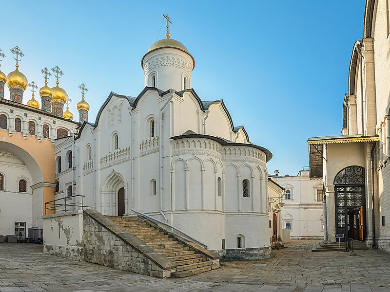

kremlin signifie" "ville fortifiée".
Centre administratif et religieux de la ville, le est le coeur de la ville ainsi que l'une des attractions les plus emblématiques non seulement de Moscou, mais de toute la Russie. C'est un lieu historique unique au monde déclaré Patrimoine Mondial par L'Unesco.
De ses 27 hectares encadrés par 2 500 mètres de murailles unies par 20 tours d'une hauteur pouvant atteindre 80 mètres, le Kremlin se reconnaits à ses murs rouges et les girouettes rouges en formes d'étoile au dessus des tours.
L'intérieur
Dans l'enceinte du Kremlin de Moscou,se trouve des endroits non visités généralement tels que: le Grand palais du Kremlin, le Palais d'Etat du kremlin ainsi que la Résidence Présidentielles, des musées, des monuments historiques et des Eglises.
Église de la Déposition-de-la-robe-de-la-Vierge
L'église de la Déposition-de-la-robe-de-la-Vierge a été édifiée entre 1484 et 1485, elle est située sur la place des cathédrales dans l'enceinte du Kremlin de Moscou, entre le palais à Facettes, le palais des Terems et la cathédrale de la Dormition. La Déposition-de-la-robe-de-la-Vierge est une fête religieuse orthodoxe en l'honneur des reliques de la Vierge ramenées de Palestine et déposées solennellement dans une chapelle construite pour les recevoir à Constantinople en l'année 452.
Cathédrale de l'annonciation
.jpg)
Construites entre le XVIe et XVIIIe siecle, la Cathédrale de l'Annonciation a été conçue et décorée au gout des tsars qui s'y sont succédés.
textCathédrale de l'Archange-Saint-Michel
.jpg)
Construites entres 1505 et 1508 pour occuper la place d'un temple plus anacien, la Cathédrale de l'Archange est décorée de jolies fresques qui datent du XVIe et XVIIe siècle, en plus d'icones remarquables et de jolies lampes.
Musée du Palais des Armures
De part une riche collectioon composée de tout type de trésors royaux , le Palais des armures de Kremlin est l'un des meileurs musées au monde dans son genre. Tout au long des expositions vous observerez des joyaux, des vetements, des armes et des armures ou certains des précieux Oeufs de Fabergé.
Le Clocher d'Ivan le Grand

S'élévant comme un géant de 80 mètres sur la Place des Cathédrales de Kremlin, le clocher d'Ivan le grand a été la plus hautes construction de Moscou pendant plus de 400 ans. a l'intéérieur, vous pouvez visiter un musée et profiter d'une vue panoraique sur la ville depuis son point de vue.